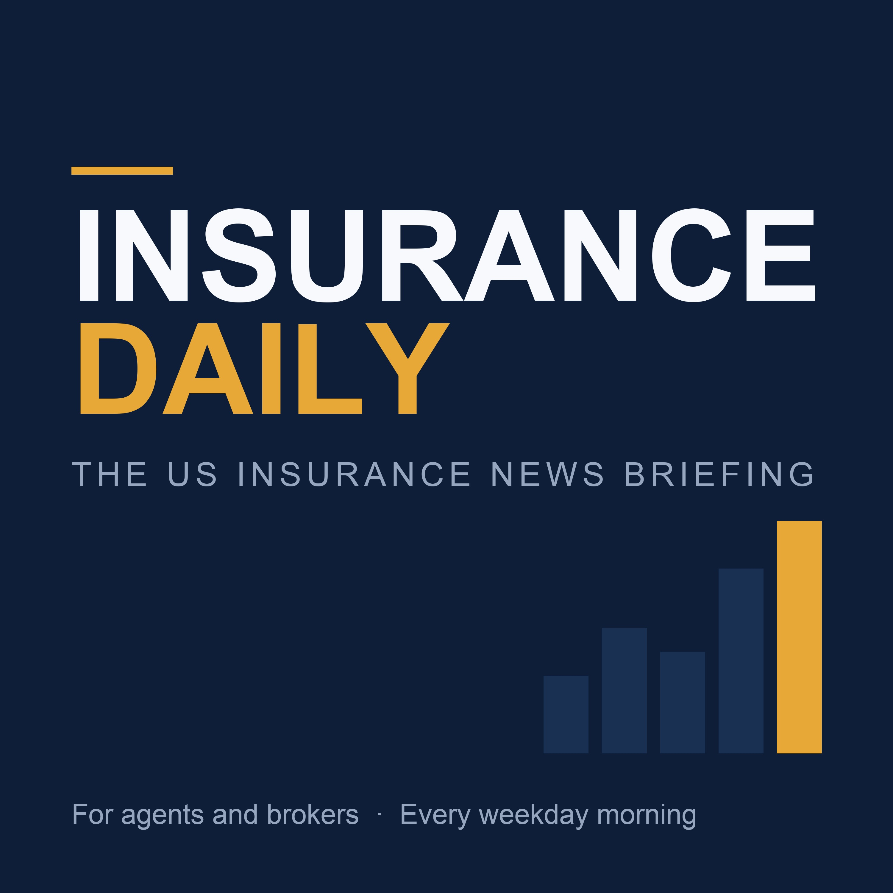

The US insurance news briefing for agents and brokers.
An AI-generated ten-minute briefing on the US insurance market, every weekday morning. Rates and capacity, carrier appetite, claims and catastrophe losses, regulation, M&A and the insurtech deals that matter. Written for agents and brokers who need to know what moved before their first call of the day. Every episode is produced by AI from published trade press reporting, with sources named on air. AI can make mistakes - verify details before acting on them.
RSS feedFriday 25 September 2026. Today's US insurance briefing for agents and brokers. - Florida OIR Approves Four More HO Rate Cuts as Citizens Keeps Shrinking (Carrier Management) - A one-in-200-year US disaster could create a $700 billion protection gap, Moody's finds (Insurance Business America) - Hurricane Nolo Threatens Hawaii With Catastrophic Flooding (Insurance Journal) - Southern California Edison Pushing for Wildfire Liability Deal Before Lawmakers Depart (Insurance Journal) - Insurance Regulators Defend State-Led Model in Reply to Warren (Insurance Journal) - Beazley launches cover for AI shutdowns, regulatory penalties (Insurance Business America) - Brokers are underselling risk management as insurers get more selective (Insurance Business America) - SPG acquires specialist as 13-state paid leave patchwork takes full shape (Insurance Business America) Also: Wisconsin workers' comp premiums drop 8% as all but five top firms see declines; Insurance moves: Liberty Mutual and NFP; Catastrophe-Bondholders Bet Hurricane Polo Won’t Trigger Losses This podcast is generated by AI from published trade press reporting. Sources are named in the episode. AI can make mistakes - please verify any detail before acting on it.
Thursday 24 September 2026. Today's US insurance briefing for agents and brokers. - Travelers Risk Index: Cyber Threats the Top Business Concern as AI Heightens Risk (Claims Journal) - Affordable and accessible reinsurance remains critical to Florida market’s stability: Morningstar DBRS (Artemis) - Hurricane Watch Posted on Hawaii’s Big Island as Nolo Approaches (Insurance Journal) - Louisiana Fortified Homes Program Receives $20M Investment (Insurance Journal) - Summer storms across the Canadian Prairies caused over $1.8bn in insured losses: CatIQ (Artemis) - U.S. Issues Short-term Waiver on Working Hours for Fuel Truck Drivers (Carrier Management) - Online Insurance Marketplace Insurify Blocks Meta’s Personal AI Agent Muse (Insurance Journal) - Public adjusters launch national conduct code for US claims (Insurance Business America) Also: Liberty Mutual Investments hires Brooks as MD, Head of Insurance Solutions & Capital Markets; Nascent Re issues $20m Quinton, $20m Stevenage preferred share insurance-linked securities; AM Best Revises Outlook to Positive for Iowa’s FMH This podcast is generated by AI from published trade press reporting. Sources are named in the episode. AI can make mistakes - please verify any detail before acting on it.